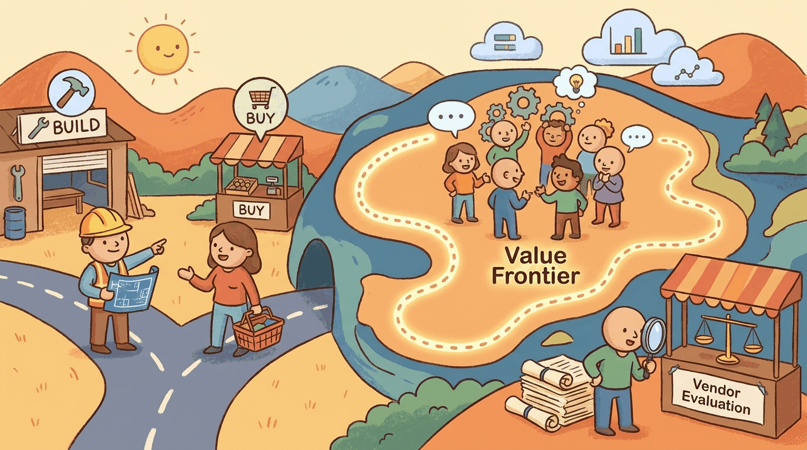

Even after you have a good problem and a working spec, you still have to pick which version to build first, which vendor to bet on, and whether to roll your own model. This chapter covers strategy and use-case prioritization: build vs. buy, vendor evaluation, and the value-frontier framework that orders a portfolio of LLM bets.
The reference essay on this question is a16z's 2024 build-vs-buy analysis of AI infrastructure. The buy-side anchor for open-weight reuse is Meta's Llama 3 release (Apr 2024), which made a frontier-tier model freely deployable. The build-side cautionary anchor is Bloomberg's BloombergGPT (Mar 2023, 50B parameters, ~\$10M training cost): an in-house pretraining bet whose ROI a GPT-4 or Claude API would have matched in many of its target tasks for a fraction of the cost.
Sections in This Chapter
- 65.1 LLM Strategy & Use Case Prioritization A chapter from the Building Conversational AI textbook.
- 65.2 LLM Vendor Evaluation & Build vs. Buy Buy. A chapter from the Building Conversational AI textbook.
What Comes Next
In the next section, Section 65.1: LLM Strategy & Use Case Prioritization, we get to work on the chapter's first concrete topic. After this chapter you continue to Chapter 64: Prototyping via Vibe-Coding.